4 Визуализация данных
4.1 Зачем визуализировать данные?
4.1.1 Квартет Анскомба
В работе Anscombe, F. J. (1973). “Graphs in Statistical Analysis” представлен следующий датасет:
quartet <- read_csv("https://raw.githubusercontent.com/agricolamz/DS_for_DH/master/data/anscombe.csv")
quartet## # A tibble: 44 x 4
## id dataset x y
## <dbl> <dbl> <dbl> <dbl>
## 1 1 1 10 8.04
## 2 1 2 10 9.14
## 3 1 3 10 7.46
## 4 1 4 8 6.58
## 5 2 1 8 6.95
## 6 2 2 8 8.14
## 7 2 3 8 6.77
## 8 2 4 8 5.76
## 9 3 1 13 7.58
## 10 3 2 13 8.74
## # … with 34 more rowsquartet %>%
group_by(dataset) %>%
summarise(mean_X = mean(x),
mean_Y = mean(y),
sd_X = sd(x),
sd_Y = sd(y),
cor = cor(x, y),
n_obs = n()) %>%
select(-dataset) %>%
round(2)## # A tibble: 4 x 6
## mean_X mean_Y sd_X sd_Y cor n_obs
## <dbl> <dbl> <dbl> <dbl> <dbl> <dbl>
## 1 9 7.5 3.32 2.03 0.82 11
## 2 9 7.5 3.32 2.03 0.82 11
## 3 9 7.5 3.32 2.03 0.82 11
## 4 9 7.5 3.32 2.03 0.82 11
4.1.2 Датазаурус
В работе Matejka and Fitzmaurice (2017) “Same Stats, Different Graphs” были представлены следующие датасеты:
datasaurus <- read_csv("https://raw.githubusercontent.com/agricolamz/DS_for_DH/master/data/datasaurus.csv")
datasaurus## # A tibble: 1,846 x 3
## dataset x y
## <chr> <dbl> <dbl>
## 1 dino 55.4 97.2
## 2 dino 51.5 96.0
## 3 dino 46.2 94.5
## 4 dino 42.8 91.4
## 5 dino 40.8 88.3
## 6 dino 38.7 84.9
## 7 dino 35.6 79.9
## 8 dino 33.1 77.6
## 9 dino 29.0 74.5
## 10 dino 26.2 71.4
## # … with 1,836 more rows
datasaurus %>%
group_by(dataset) %>%
summarise(mean_X = mean(x),
mean_Y = mean(y),
sd_X = sd(x),
sd_Y = sd(y),
cor = cor(x, y),
n_obs = n()) %>%
select(-dataset) %>%
round(1)## # A tibble: 13 x 6
## mean_X mean_Y sd_X sd_Y cor n_obs
## <dbl> <dbl> <dbl> <dbl> <dbl> <dbl>
## 1 54.3 47.8 16.8 26.9 -0.1 142
## 2 54.3 47.8 16.8 26.9 -0.1 142
## 3 54.3 47.8 16.8 26.9 -0.1 142
## 4 54.3 47.8 16.8 26.9 -0.1 142
## 5 54.3 47.8 16.8 26.9 -0.1 142
## 6 54.3 47.8 16.8 26.9 -0.1 142
## 7 54.3 47.8 16.8 26.9 -0.1 142
## 8 54.3 47.8 16.8 26.9 -0.1 142
## 9 54.3 47.8 16.8 26.9 -0.1 142
## 10 54.3 47.8 16.8 26.9 -0.1 142
## 11 54.3 47.8 16.8 26.9 -0.1 142
## 12 54.3 47.8 16.8 26.9 -0.1 142
## 13 54.3 47.8 16.8 26.9 -0.1 1424.2 Основы ggplot2
Пакет ggplot2 – современный стандарт для создания графиков в R. Для этого пакета пишут массу расширений. В сжатом виде информация про ggplot2 содержиться здесь.
4.2.1 Диаграмма рассеяния (Scaterplot)
- ggplot2

- dplyr, ggplot2
4.2.2 Слои
## `geom_smooth()` using method = 'gam' and formula 'y ~ s(x, bs = "cs")'
## `geom_smooth()` using method = 'gam' and formula 'y ~ s(x, bs = "cs")'
4.2.3 aes()
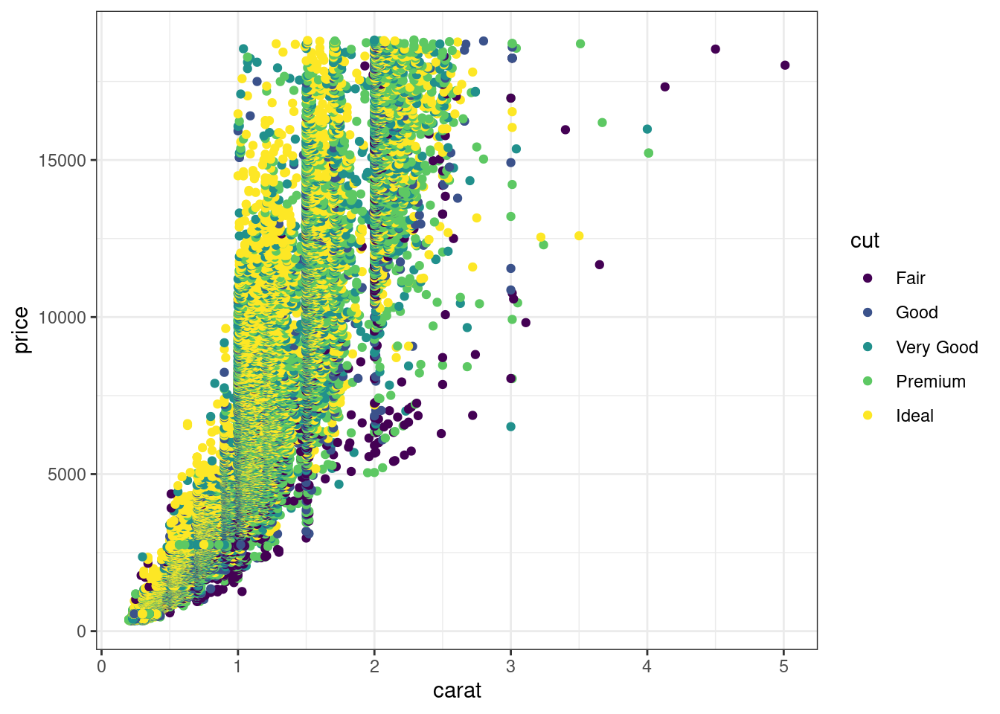
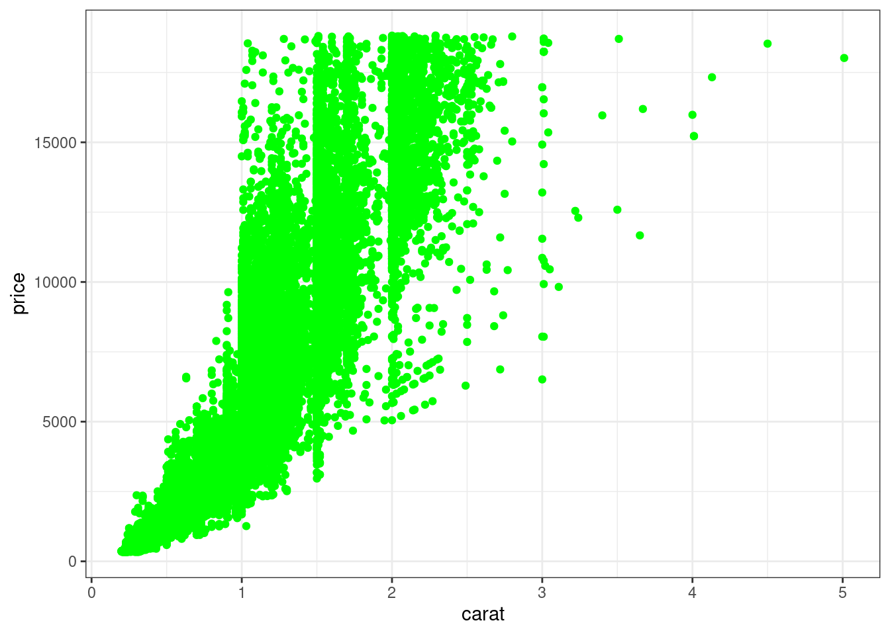

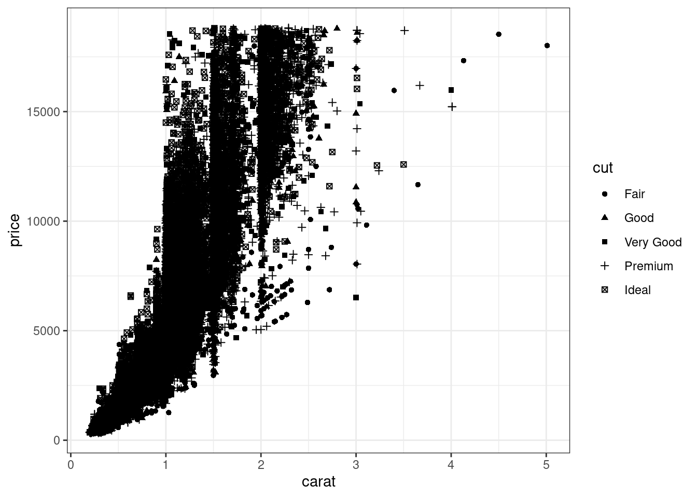
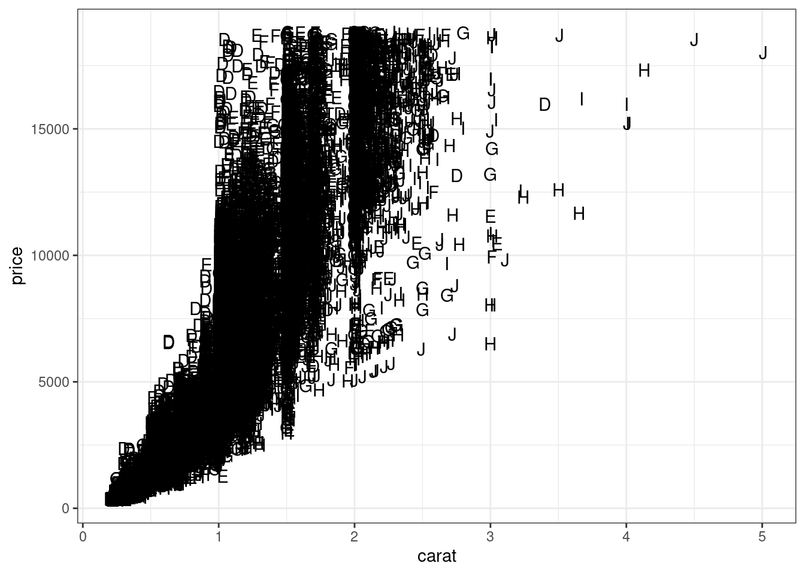

Иногда аннотации налезают друг на друга:
library(ggrepel)
diamonds %>%
slice(1:100) %>%
ggplot(aes(carat, price, label = color))+
geom_text_repel()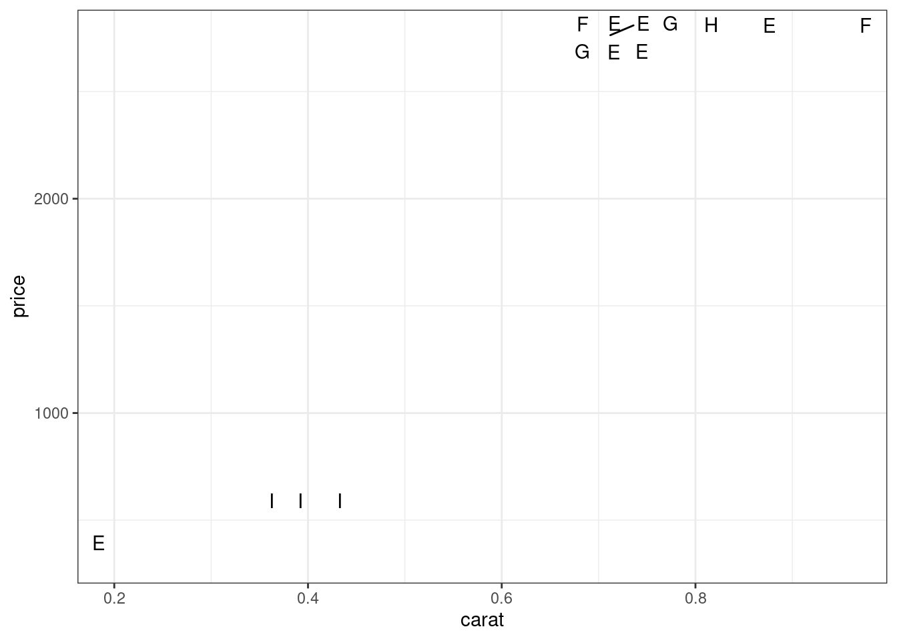
diamonds %>%
slice(1:100) %>%
ggplot(aes(carat, price, label = color))+
geom_text_repel()+
geom_point()
diamonds %>%
slice(1:100) %>%
ggplot(aes(carat, price, label = color, fill = cut))+ # fill отвечает за закрашивание
geom_label_repel(alpha = 0.5)+ # alpha отвечает за прозрачность
geom_point()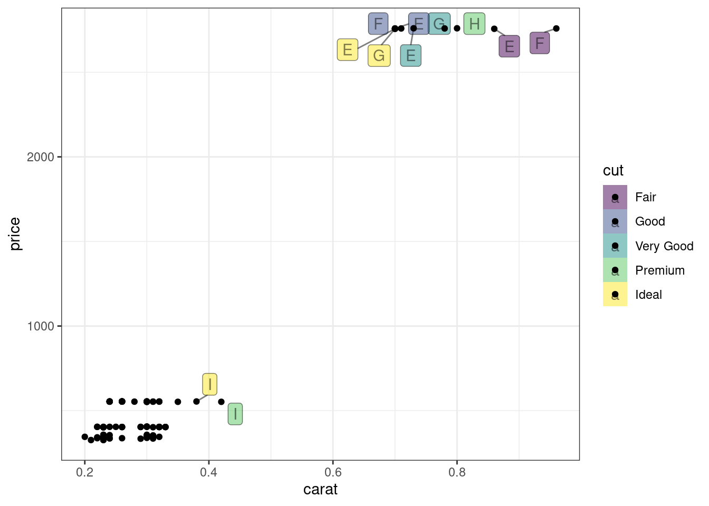
4.2.4 Оформление
diamonds %>%
ggplot(aes(carat, price, color = cut))+
geom_point() +
labs(x = "вес (в каратах)",
y = "цена (в долларах)",
title = "Связь цены и веса бриллиантов",
subtitle = "Данные взяты из датасеты diamonds",
caption = "график сделан при помощи пакета ggplot2")+
theme(legend.position = "bottom") # у функции theme() огромный функционал
4.2.5 Логарифмические шкалы

Рассмотрим словарь [Ляшевской, Шарова 2011]
## Parsed with column specification:
## cols(
## lemma = col_character(),
## pos = col_character(),
## freq_ipm = col_double()
## )freqdict %>%
arrange(desc(freq_ipm)) %>%
mutate(id = 1:n()) %>%
slice(1:150) %>%
ggplot(aes(id, freq_ipm))+
geom_point()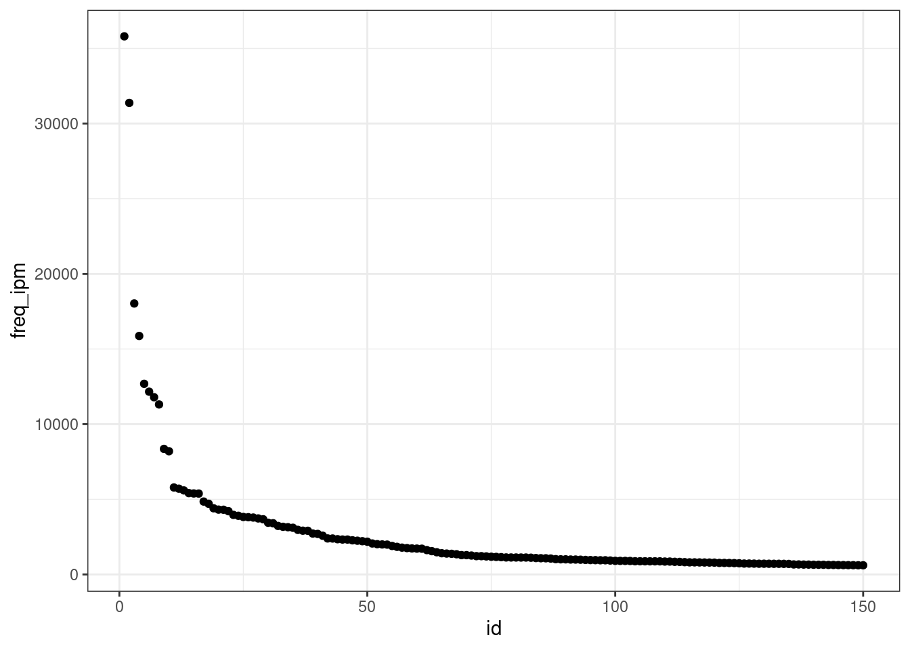
freqdict %>%
arrange(desc(freq_ipm)) %>%
mutate(id = 1:n()) %>%
slice(1:150) %>%
ggplot(aes(id, freq_ipm, label = lemma))+
geom_point()+
geom_text_repel()+
scale_y_log10()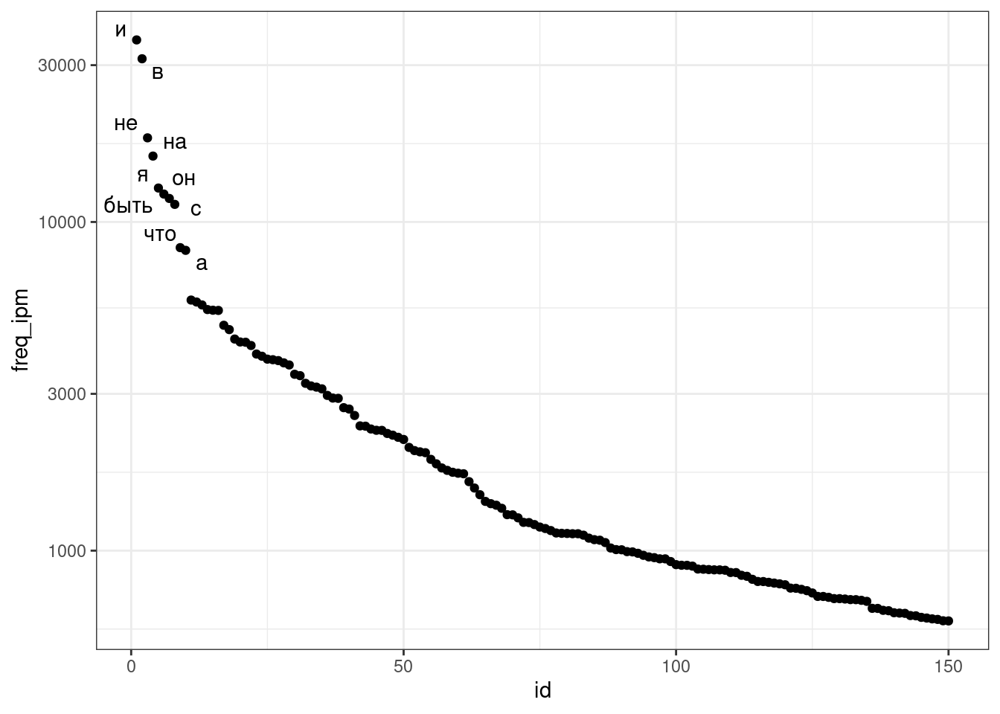
4.2.6 annotate()
Функция annotate добавляет geom к графику.
diamonds %>%
ggplot(aes(carat, price, color = cut))+
geom_point()+
annotate(geom = "rect", xmin = 4.8, xmax = 5.2,
ymin = 17500, ymax = 18500, fill = "red", alpha = 0.2) +
annotate(geom = "text", x = 4.7, y = 16600,
label = "помогите...\n я в розовом\nквадратике")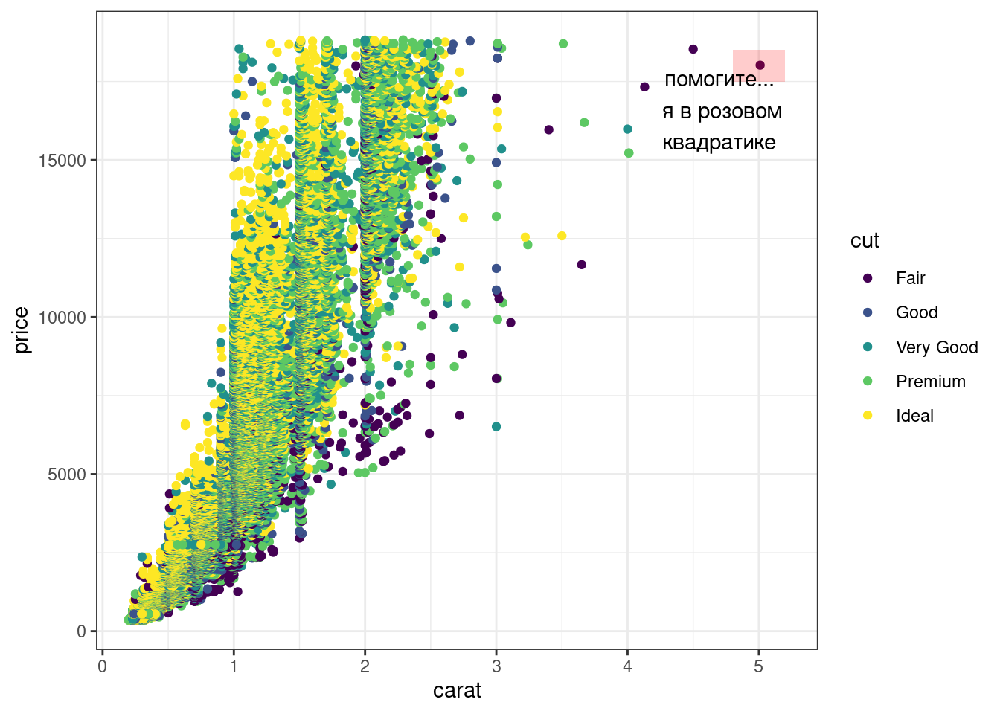
Скачайте вот этот датасет и постройте диаграмму рассеяния.
4.3 Столбчатые диаграммы (barplots)
Одна и та же информация может быть представлена в агрегированном и не агрегированном варианте:
misspelling <- read_csv("https://raw.githubusercontent.com/agricolamz/DS_for_DH/master/data/misspelling_dataset.csv")## Parsed with column specification:
## cols(
## correct = col_character(),
## spelling = col_character(),
## count = col_double()
## )## # A tibble: 15,477 x 3
## correct spelling count
## <chr> <chr> <dbl>
## 1 deschanel deschanel 18338
## 2 deschanel dechanel 1550
## 3 deschanel deschannel 934
## 4 deschanel deschenel 404
## 5 deschanel deshanel 364
## 6 deschanel dechannel 359
## 7 deschanel deschanelle 316
## 8 deschanel dechanelle 192
## 9 deschanel deschanell 174
## 10 deschanel deschenal 165
## # … with 15,467 more rows- переменные spelling аггрегирована: для каждого значения представлено значение в столбце count, которое обозначает количество каждого из написаний
- переменные correct неаггрегированы: в этом столбце она повторяется, для того, чтобы сделать вывод, нужно отдельно посчитать количество вариантов
Для аггрегированных данных используется geom_col()
Перевернем оси:
Для аггрегированных данных используется geom_bar()

Перевернем оси:
4.4 Факторы
Как можно заметить по предыдущему разделу, переменные на графике упорядочены по алфавиту. Чтобы это исправить нужно обсудить факторы:
## [1] deschanel deschanel deschanel deschanel deschanel deschanel
## 15 Levels: deschanel galifianakis johansson kaepernick ... shyamalan## [1] "deschanel" "galifianakis" "johansson" "kaepernick"
## [5] "labeouf" "macaulay" "mcconaughey" "mcgwire"
## [9] "mclachlan" "minaj" "morissette" "palahniuk"
## [13] "picabo" "poehler" "shyamalan"## [1] shyamalan shyamalan shyamalan shyamalan shyamalan shyamalan
## 15 Levels: shyamalan poehler picabo palahniuk morissette ... deschanelmisspelling %>%
mutate(correct = factor(correct, levels = c("deschanel",
"galifianakis",
"johansson",
"kaepernick",
"labeouf",
"macaulay",
"mcgwire",
"mclachlan",
"minaj",
"morissette",
"palahniuk",
"picabo",
"poehler",
"shyamalan",
"mcconaughey"))) %>%
ggplot(aes(correct))+
geom_bar()+
coord_flip()## mutate: converted 'correct' from character to factor (0 new NA)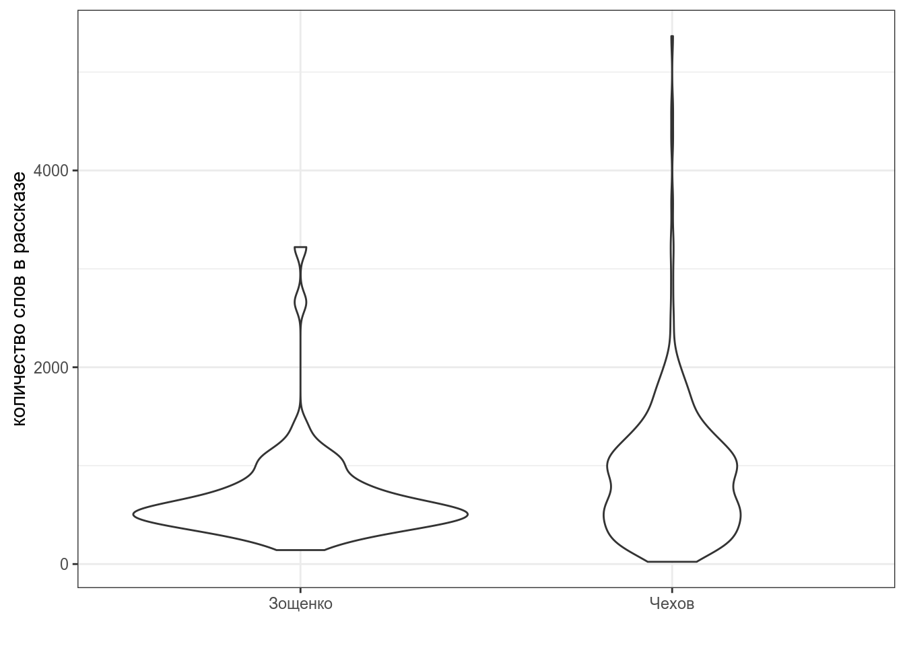
Для работы с факторами удобно использовать пакет forcats (входит в tidyverse, вот ссылка на cheatsheet).
Иногда полезной бывает функция fct_reorder():
## count: now 15 rows and 2 columns, ungrouped## # A tibble: 15 x 2
## correct n
## <chr> <int>
## 1 deschanel 1015
## 2 galifianakis 2633
## 3 johansson 392
## 4 kaepernick 779
## 5 labeouf 449
## 6 macaulay 1458
## 7 mcconaughey 2897
## 8 mcgwire 262
## 9 mclachlan 1054
## 10 minaj 200
## 11 morissette 478
## 12 palahniuk 1541
## 13 picabo 460
## 14 poehler 386
## 15 shyamalan 1473misspelling %>%
count(correct) %>%
ggplot(aes(fct_reorder(correct, n), n))+
geom_col()+
coord_flip()## count: now 15 rows and 2 columns, ungrouped
Можно совмещать разные geom_...:
misspelling %>%
count(correct) %>%
ggplot(aes(fct_reorder(correct, n), n, label = n))+
geom_col()+
geom_text(nudge_y = 150)+
coord_flip()## count: now 15 rows and 2 columns, ungroupedНа Pudding вышла статья про английские пабы. Здесь лежит немного обработанный датасет, которые они использовали. Визуализируйте 30 самых частотоных названий пабов в Великобритании.
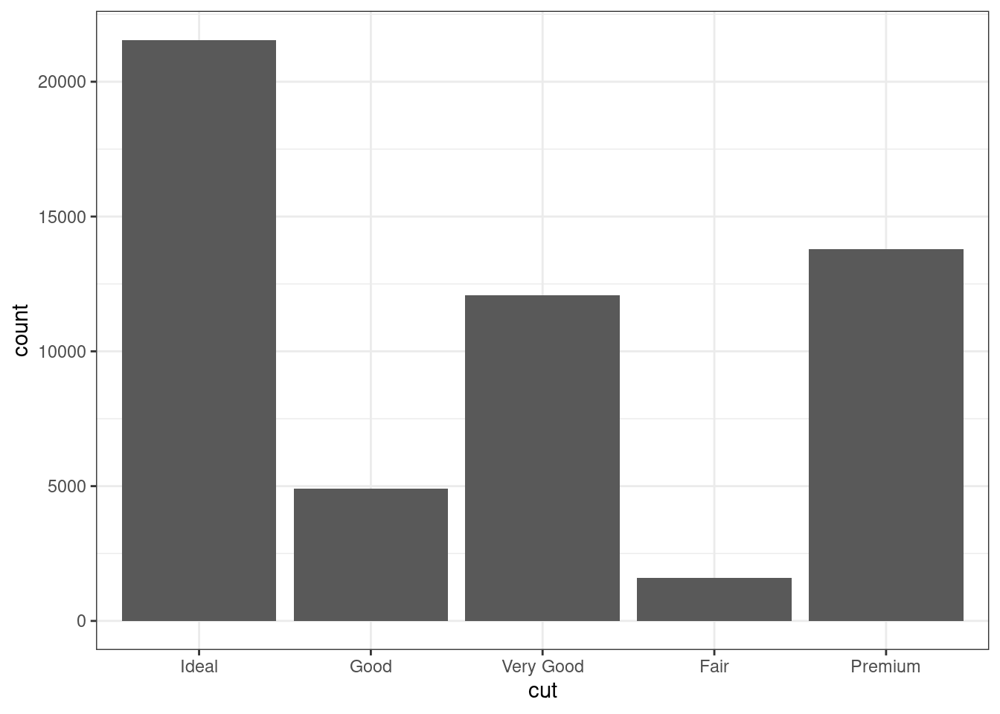
📋 список подсказок ➡
👁 Как получить нужный датафрейм, где все поссчитано? ➡
Этоможно сделать функциейcount. 👁 Стоп, а почему у меня нарисовалось так много значений? ➡
Может быть нужно было, как написано в задании, взять лишь 30 наблюдений? Полезная функция для этогоslice(). 👁 Почему нарисовались лишь бары с частотностью 1?. ➡
По умолчаниюcount не сортирует вообще, так что в slice() попали бары с частотностью 1. Надо отсортировать от большего к меньшему, перед тем как делать slice(). Это можно сделать при помощи функции arrange() или использовать аргумент sort = TRUE в функции count() 👁 Кажется все? ➡
А Вы убрали подписи осей x и y? А подпись добавили?
На новостном портале meduza.io недавно вышла новость о применения закона “о неуважении к власти в интернете”. Постройте графики из этой новости. Для того, чтобы создать объединяющую линию по всем месяцам, нужно использовать geom_line(), заведя перед этим общую для всех наблюдений переменную с одним значением, например, type = 1, а потом в aes(…, group = type). При построении графиков я использовал цвет “tan3”.

4.5 Гистограммы
Иногда для случаев, когда мы исследуем числовую переменную подходит простой график, который отображает распределение наших наблюдений на одной соответствующей числовой шкале.
## `stat_bindot()` using `bins = 30`. Pick better value with `binwidth`.
По оси x отложена наша переменная, каждая точка – одно наблюдение, а отложенное по оси y стоит игнорировать – оно появляется из-за ограничений пакета ggplot2. Возможно чуть понятнее будет, если добавить geom_rug(), который непосредственно отображает каждое наблюдение.
## `stat_bindot()` using `bins = 30`. Pick better value with `binwidth`.
Больший смысл имеет раскрашенный вариант:
mtcars %>%
mutate(cyl = factor(cyl)) %>%
ggplot(aes(mpg, fill = cyl)) +
geom_rug()+
geom_dotplot(method = "histodot")+
scale_y_continuous(NULL, breaks = NULL) # чтобы убрать ось y## mutate: converted 'cyl' from double to factor (0 new NA)## `stat_bindot()` using `bins = 30`. Pick better value with `binwidth`.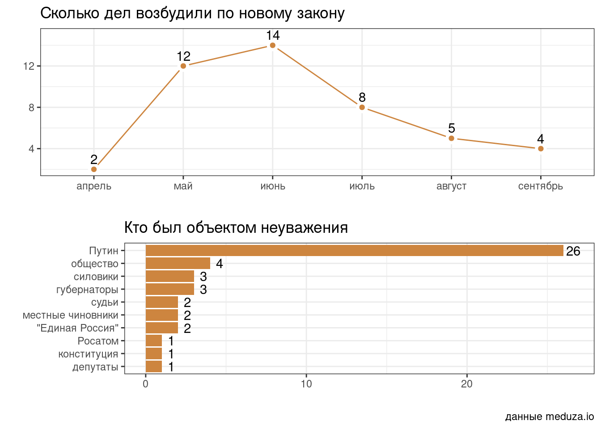 Как видно, на графике, одна синяя точка попала под одну зеленую: значит они имеют общее наблюдение.
4.6 Гистограммы
Если наблюдений слишком много, дотплот не имеем много смысла:
diamonds %>%
ggplot(aes(price)) +
geom_dotplot(method = "histodot")+
scale_y_continuous(NULL, breaks = NULL) # чтобы убрать ось y## `stat_bindot()` using `bins = 30`. Pick better value with `binwidth`.## `stat_bin()` using `bins = 30`. Pick better value with `binwidth`.
Обсудим на предыдущем примере
## `stat_bin()` using `bins = 30`. Pick better value with `binwidth`.По оси x отложена наша переменная, а высота столбца говорит, сколько наблюдений имеют такое же наблюдение. Однако многое зависит от того, что мы считаем одинаковым значением:

Существует три алгоритма встроенные в R, которые можно использовать и снимать с себя ответственность:
- [Sturgers 1926]
nclass.Sturges(mtcars$mpg) - [Scott 1979]
nclass.scott(mtcars$mpg) - [Freedman, Diaconis 1981]
nclass.FD(mtcars$mpg)
Какой из методов использовался при создании следующего графика на основе встроенного датасета iris?
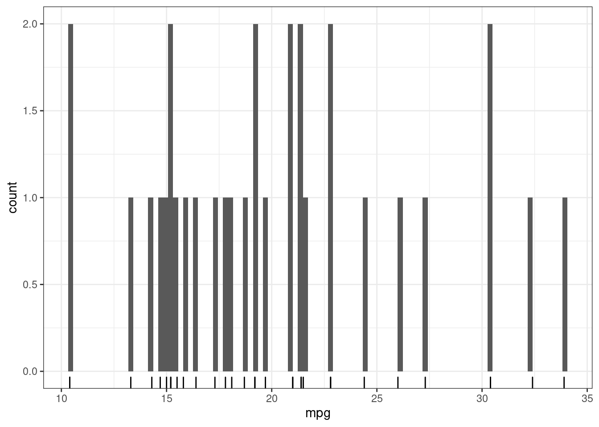
В этом типе графика точно так же можно раскрашивать на основании другой переменной:
## `stat_bin()` using `bins = 30`. Pick better value with `binwidth`.4.7 Функции плотности
Кроме того, существует способ использовать не такой рубленный график, а его сглаженную вариант, который строиться при помощи функции плотности. Важное свойство, которое стоит понимать про функцию плотности — что кривая, получаемая

Таким образом мы можем сравнивать распределения:
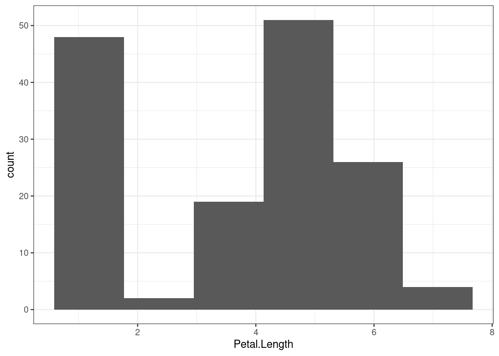
Часто имеет смысл настроить прозрачность:
iris %>%
ggplot(aes(Petal.Length, fill = Species)) +
geom_rug()+
geom_density(alpha = 0.6) # значение прозрачности изменяется от 0 до 1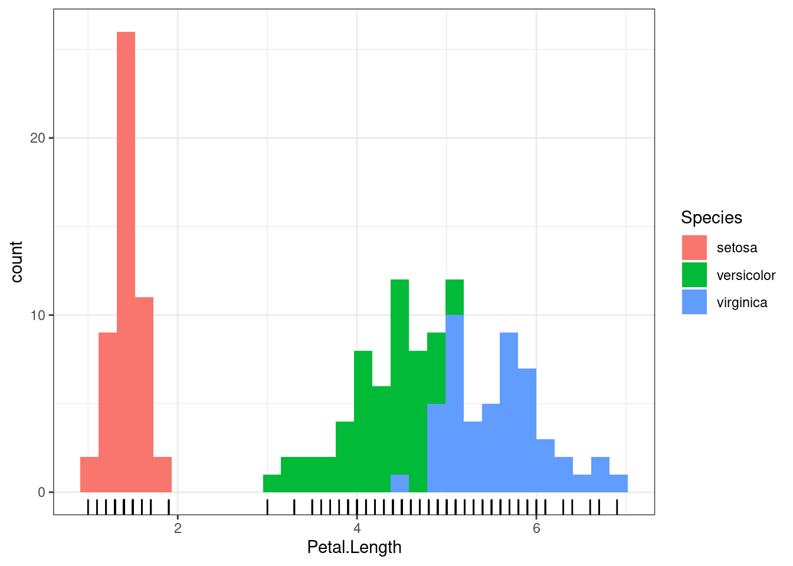
Кроме того, иногда удобно разделять группы на разные уровни:
library(ggridges)
iris %>%
ggplot(aes(Petal.Length, Species, fill = Species)) +
geom_density_ridges(alpha = 0.6) # значение прозрачности изменяется от 0 до 1## Picking joint bandwidth of 0.155
В длинный список “2015 Kantar Information is Beautiful Awards” попала визуализация Perceptions of Probability, сделанная пользователем zonination в ggplot2. Попробуйте воспроизвести ее с этими данными.
📋 список подсказок ➡
👁 как преобразовать в нужный формат? ➡
Я делал это при помощи функцииpivot_longer(). 👁 не получается обратиться к колонкам ➡
Да, если в названиях столбцов есть пробел или цифры, то к ним можно обратиться, воспользовавшись обратынми ковычками `.👁 получается, но порядок неправильный… ➡
Ага, мы обсуждали факторы. Придется создать переменную, которая посчитает среднее или медиану по каждому из слов, а дальше воспользуйтесь функциейreorder(). 👁 R не дает изменить группирующую переменную ➡
Да, группирующие переменные изменять нельзя. Но можно использовать функциюungroup(), которая снимает все группировки.
👁 а как убрать легенду? ➡
Легенду можно убрать добавивshow.legend = FALSE в соответствующий geom_....
4.8 Точки, джиттер (jitter), вайолинплот (violinplot), ящики с усами (boxplot),
Вот другие способы показать распределение числовой переменной:


4.9 Фасетизация
Достаточно мощным инструментом анализа данных является фасетизация, которая позволяет разбивать графики на основе какой-то переменной.
 При этом иногда так бывает, что наличие какой-то одного значение в одном из фасетов, заставляет иметь одну и ту же шкалу для всех остальных. Это можно изменить при помощи аргумента
При этом иногда так бывает, что наличие какой-то одного значение в одном из фасетов, заставляет иметь одну и ту же шкалу для всех остальных. Это можно изменить при помощи аргумента scales:
Кроме того, можно добавлять еще аргументы:
diamonds %>%
ggplot(aes(carat, price))+
geom_point(size = 0.3)+
facet_wrap(~cut+color, scales = "free")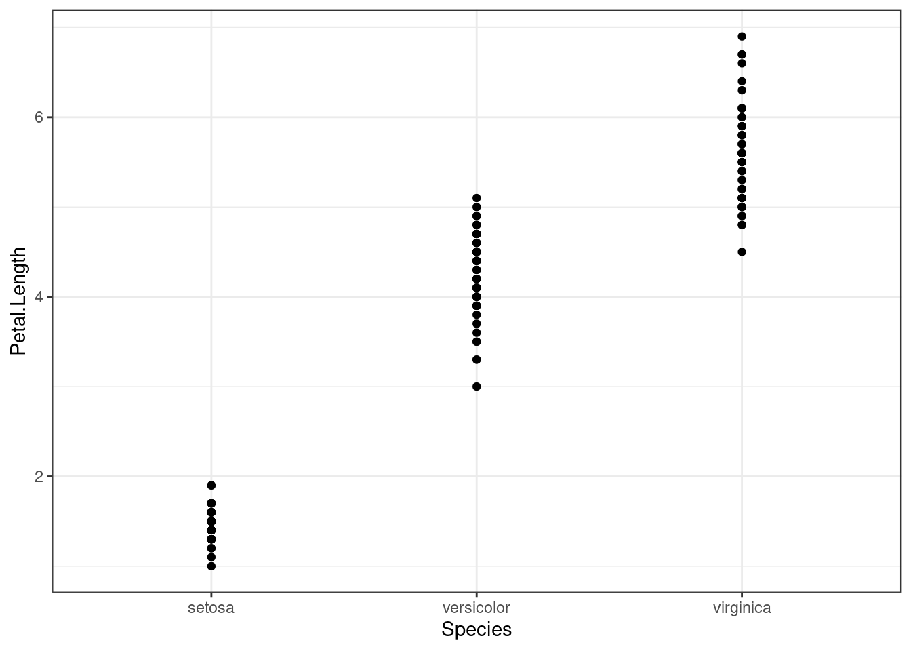
Кроме того можно создавать сетки переменных используя geom_grid(), они занимают меньше места, чем facet_wrap():
diamonds %>%
ggplot(aes(carat, price))+
geom_point(size = 0.3)+
facet_grid(cut~color, scales = "free")Кроме того facet_grid() позволяет делать обощающие поля, где представлены все данные по какой-то строчке или столбцу:
diamonds %>%
ggplot(aes(carat, price))+
geom_point(size = 0.3)+
facet_grid(cut~color, scales = "free", margins = TRUE)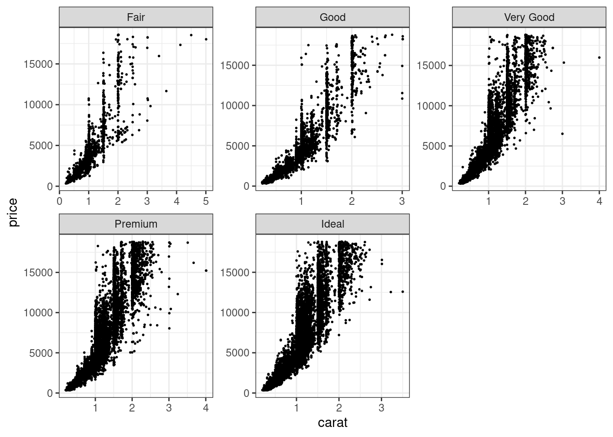
4.10 Визуализация комбинаций признаков
4.10.1 Потоковая Диаграмма (Sankey diagram)
Один из способов визуализации отношений между признаками называется потоковая диаграмма.
library("ggforce")
zhadina <- read_csv("https://raw.githubusercontent.com/agricolamz/DS_for_DH/master/data/zhadina.csv")## Parsed with column specification:
## cols(
## word_1 = col_character(),
## word_2 = col_character(),
## word_3 = col_character(),
## type = col_character(),
## n = col_double()
## )zhadina %>%
gather_set_data(1:3) %>%
ggplot(aes(x, id = id, split = y, value = n))+
geom_parallel_sets(aes(fill = type), alpha = 0.6, axis.width = 0.5) +
geom_parallel_sets_axes(axis.width = 0.5, color = "lightgrey", fill = "white") +
geom_parallel_sets_labels(angle = 0) +
theme_no_axes()+
theme(legend.position = "bottom")
А как поменять порядок? Снова факторы.
zhadina %>%
gather_set_data(1:3) %>%
mutate(y = reorder(y, n)) %>%
ggplot(aes(x, id = id, split = y, value = n))+
geom_parallel_sets(aes(fill = type), alpha = 0.6, axis.width = 0.5) +
geom_parallel_sets_axes(axis.width = 0.5, color = "lightgrey", fill = "white") +
geom_parallel_sets_labels(angle = 0) +
theme_no_axes()+
theme(legend.position = "bottom")## mutate: converted 'y' from character to factor (0 new NA)Можно донастроить, задав собственный порядок в аргументе levels функции factor().
4.10.2 UpSet Plot
Если диаграмма Sankey визуализирует попарные отношения между переменными, то график UpSet потенциально может визуализировать все возможные комбинации и является хорошей альтернативой диаграмме Вена, с большим количеством переменных (см. эту статью Лауры Эллис).
library(UpSetR)
movies <- read.csv( system.file("extdata", "movies.csv", package = "UpSetR"), header=TRUE, sep=";" )
str(movies)## 'data.frame': 3883 obs. of 21 variables:
## $ Name : Factor w/ 3883 levels "...And Justice for All (1979)",..: 3576 1860 1485 3718 1179 1564 3012 3551 3364 1426 ...
## $ ReleaseDate: int 1995 1995 1995 1995 1995 1995 1995 1995 1995 1995 ...
## $ Action : int 0 0 0 0 0 1 0 0 1 1 ...
## $ Adventure : int 0 1 0 0 0 0 0 1 0 1 ...
## $ Children : int 1 1 0 0 0 0 0 1 0 0 ...
## $ Comedy : int 1 0 1 1 1 0 1 0 0 0 ...
## $ Crime : int 0 0 0 0 0 1 0 0 0 0 ...
## $ Documentary: int 0 0 0 0 0 0 0 0 0 0 ...
## $ Drama : int 0 0 0 1 0 0 0 0 0 0 ...
## $ Fantasy : int 0 1 0 0 0 0 0 0 0 0 ...
## $ Noir : int 0 0 0 0 0 0 0 0 0 0 ...
## $ Horror : int 0 0 0 0 0 0 0 0 0 0 ...
## $ Musical : int 0 0 0 0 0 0 0 0 0 0 ...
## $ Mystery : int 0 0 0 0 0 0 0 0 0 0 ...
## $ Romance : int 0 0 1 0 0 0 1 0 0 0 ...
## $ SciFi : int 0 0 0 0 0 0 0 0 0 0 ...
## $ Thriller : int 0 0 0 0 0 1 0 0 0 1 ...
## $ War : int 0 0 0 0 0 0 0 0 0 0 ...
## $ Western : int 0 0 0 0 0 0 0 0 0 0 ...
## $ AvgRating : num 4.15 3.2 3.02 2.73 3.01 3.88 3.41 3.01 2.66 3.54 ...
## $ Watches : int 2077 701 478 170 296 940 458 68 102 888 ...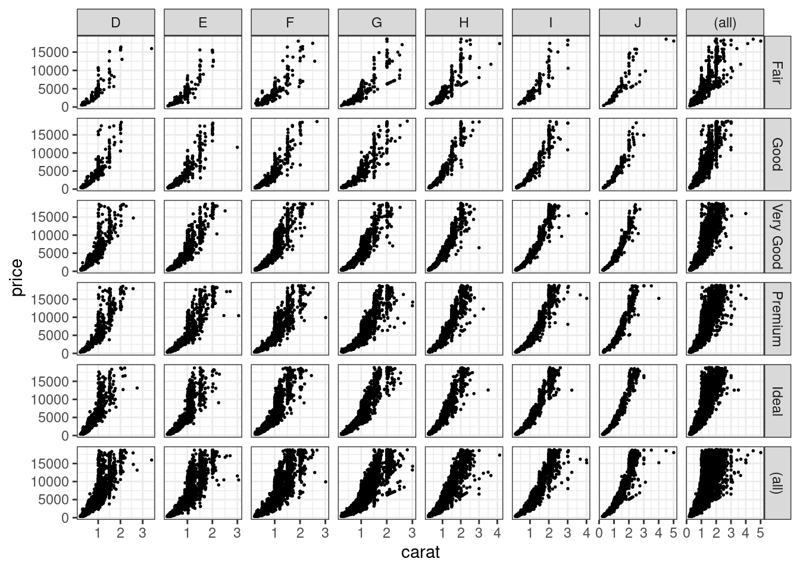